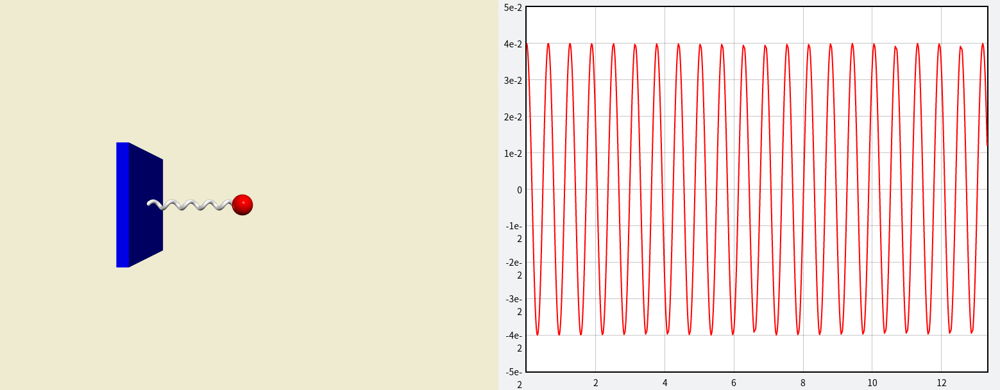
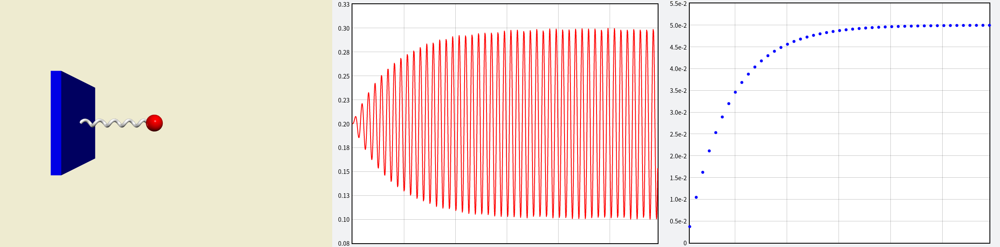
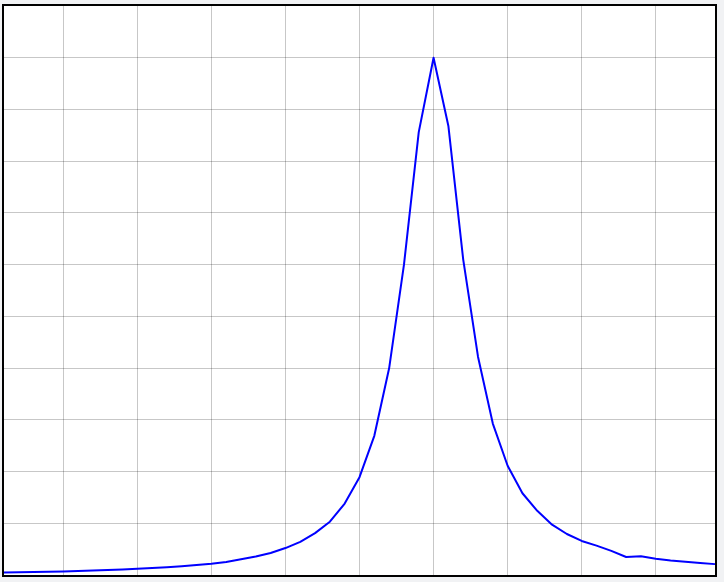
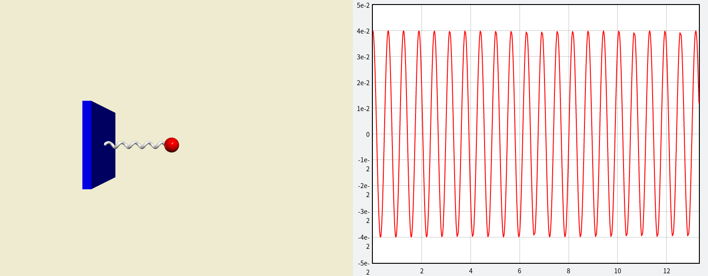
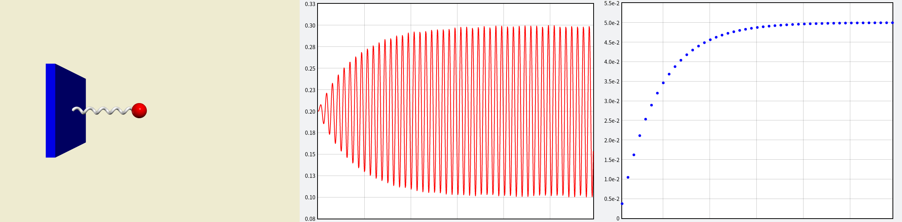
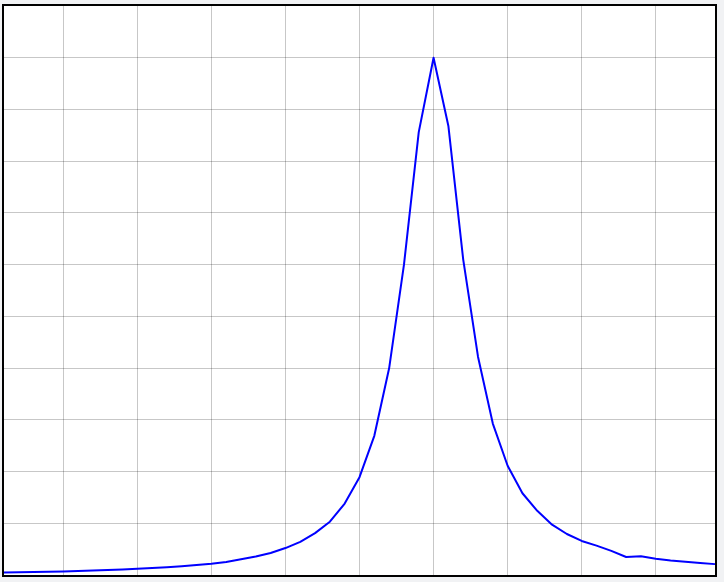

VP6: Damped Oscillator and Coupled Oscillator [empty class, list representation]
好的，接下來我們一口氣跳過 VP4 和 VP5，直接來做 VP6 了。那幾次作業中出現的 Python 概念，我會盡量在需要的時候補充，或是你們如果想直接看看這兩次作業的內容，也可以去看我去年的文件（VP4, VP5）。
額外補充
影片以及官方pdf
同學們的影片
作業繳交格式
請上傳一個 zip 檔（壓縮檔，請注意副檔名要是 zip）到 CEIBA，zip 檔內需要包含一個名稱是自己學號的資料夾，裡面包含一個 py 檔。請將必作部份取名為 must.py。若本次作業有拍攝說明影片，請將影片連結寫在 video.txt 裡面，並一併放入學號資料夾中。
範例：（zip 檔名可以隨便取，CEIBA 系統會自己把檔名改掉）
sukinishiro.zip
└── r07222060
├── must.py
└── video.txt
助教註:
如果你是用 JuPyter notebook 寫的，請記得將你的程式用 .py 格式下載下來，不要給我 .ipynb 或甚至 .html。
繳交期限
2019/12/03 TUE 21:00
Prior Knowledge
The concepts that were mentioned in VP4 and VP5
Function
There are generally two cases in which we want to write a section of codes as a function. In one, we want to reuse many times the same section of codes. In the other, we want to make the entire codes more readable. Here is the example function that yields the velocities of two spherical objects after an elastic collision.
助教註: The example function here is just the function used in VP4
def af_col_v(m1, m2, v1, v2, x1, x2):
v1_prime = v1 + 2*(m2/(m1+m2))*(x1-x2) * dot (v2-v1, x1-x2) / dot (x1-x2, x1-x2)
v2_prime = v2 + 2*(m1/(m1+m2))*(x2-x1) * dot (v1-v2, x2-x1) / dot (x2-x1, x2-x1)
return (v1_prime, v2_prime)
The first line def af_col_v(m1, m2, v1, v2, x1, x2): declares the function name as af_col_v by def. The function name is better to have meaning, here it means “after collision velocities”. After the function name is the parentheses and a colon. Inside the parentheses can be empty or any parameters which pass information from the main program to the function. In this case, they are m1, m2, v1, v2, x1, x2 for masses, velocities, and positions of the two objects, respectively.
The subordinate codes below the colon are the major part of the function that handles the job. Here, they calculate the velocities after collision from the masses, velocities, and positions of the two spherical objects and put them into two variables, v1_prime and v2_prime. In the last line, it return the values of the two variables back to where the function is called.
Say if we have the following code
V1, V2 = after_col_v(0.5, 0.6, vec(1, 2, 3), vec(4, 5, 6), vec(1, 0, 1), vec(0, 1, 1))
It will call the after_col_v function and let m1 = 0.5, m2= 0.6, v1 = vec(1, 2, 3)…, and so on. And after the function is executed, V1 and V2 will be the values of v1_prime and v2_prime, respectively. Note that this way of calling function is “call by position”, i.e. the parameters are matched by position order. We can also do this by “call by keywords”, such as
V1, V2 = after_col_v(v1=vec(1, 2, 3), v2=vec(4, 5, 6), m2=0.6, x1=vec(1, 0, 1), x2=vec(0, 1, 1), m1=0.5)
Within the parentheses, the parameter order is not at all important, since the parameter is assigned explicitly.
助教註: Actually, you already know many functions in vpython, like cos, exp, mag, etc.
Class
It’s highly recommended to see Prof. Shih’s video for VP5. I think it would be much easier to understand the concept of the class by seeing the video.
A class(類別) is like a template or a model of Python objects. We use classes to define the methods and the attributes in the objects. For example, sphere, helix, vector in VPython are classes defined by the authors of VPython.
The following is the free fall program (from VP1) with a modification to include a class.
from vpython import *
g, size, height = 9.8, 0.25, 15.0
class any_ball(sphere):
m = 1.0
v = vector(0,0,0)
def kinetic_energy(self):
return 0.5 * self.m * mag(self.v)**2
scene = canvas(width=800, height=800, center=vec(0, height/2, 0), background=vec(0.5, 0.5, 0))
floor = box(length=30, height=0.01, width=10, color=color.blue)
ball = any_ball(radius=size, color=color.red)
print(ball.m, ball.v, ball.kinetic_energy())
ball.pos, ball.v, ball.m = vector(0, height, 0), vector(0, 0, 0), 3.0
dt = 0.001
while ball.pos.y >= size:
rate(1000)
ball.pos += ball.v*dt
ball.v.y += -g*dt
print(ball.m, ball.v, ball.kinetic_energy())
-
class any_ball(sphere):
m = 1.0
v = vector(0,0,0)
def kinetic_energy(self):
return 0.5 * self.m * mag(self.v)**2
- Declare a class
any_ball with properties (“attributes”[1] and “methods”[2]) inherited[3] from sphere
- Declare two attributes
m and v with default values 1.0 and vector(0,0,0). (sphere doesn’t have these two attributes)
def kinetic_energy(self): declaring a method, which is a function belonged to a specific class. The way it works is the same as a function, except that its first argument is always self[4], which is the object calling this method.
-
ball = any_ball(radius=size, color=color.red)
print(ball.m, ball.v, ball.kinetic_energy())
- Create an object belonged to
any_ball class, and passing arguments into any_ball’s initializing function __init__().[5]
- Print
ball.m, ball.v. Since we didn’t assign other values to the attributes m and v, they are just the default values in any_ball. And ball.kinetic_energy() calls the kinetic_energy method.
-
while ball.pos.y >= size:
rate(1000)
ball.pos += ball.v*dt
ball.v.y += -g*dt
print(ball.m, ball.v, ball.kinetic_energy())
- Now
ball has its attributes m and v. We could print ball.m, ball.v and ball.kinetic_energy() as well.
助教註:
I collect the explanations of the terms together here .
[1] attribute(屬性):
An attribute is like a variable belonging to the class, or a feature of the class. Attributes store the information about the class object. For example, pos, radius, color are all attributes of the class sphere, and we can get access to these attributes by ball.pos, ball.radius, etc, if we have set ball = sphere().
[2] method(方法):
A method is just like a function belonging to the class. Generally, we uses methods to perform the operations inside the class, so that the code would not be too complicated. For example, vector.norm() in vpython returns the unit vector along the vector, and here norm() is a method of vector. So we could use spring.axis.norm() instead of spring.axis/mag(spring.axis) in VP3.
[3] inherit(繼承):
If there are two class A and B ,with B inheriting from A, it means that B will by default have the same attributes and methods of A , unless we re-define them. In the codes above, the class any_ball works just like a sphere with the new defined m, v, and kinetic_energy(). If we write nothing in the definition of any_ball like:
class any_ball(sphere):
pass
Then any_ball would be nothing but just a normal sphere.
[4] self:
In python, self is used in a class to represent the object itself. Here we use the definition of any_ball above as an example. If we create an any_ball object called ball_2, then ball_1.kinetic_energy() will use ball_2.m and ball_2.v to calculate the return value, instead of ball.m, ball.v, or other any_ball objects.
[5] __init__:
If you are curious about the __init__() method, you can take a look at: https://openhome.cc/Gossip/Python/Class.html
I have tried, but I think it’s still not clear enough, so if you have any problems just feel free to ask me.
I. List Representation
-
range(). Notice the number in range should be integer (int)
r = range(5)
r = range(4, 9)
r = range(1, 6, 2)
助教註:
Notice that the range object in Python is not a list. Actually it’s something called “generator”, so Professor said list(r) = [...] here instead of r = [...]. Although you can’t directly use it as a list, you can turn it into a list like what Professor did here, e.g. list(range(5)).
-
list representation. Sometimes we want to generate a list with some conditions, e.g.,
L = [i**2 for i in range(5)]
L = [0.1*i*pi for i in range(-3, 3)]
L = [i**2 for i in range (5) if i != 3]
-
List representation can be used in a nested structure, or for dictionary or tuple. e.g.,
L = [i*10 + j for i in range(3) for j in range(5)]
D = {i:i**2 for i in [0, 1, 2]}
助教註:
(Dictionary is a type of Python objects used in VP5, but we won’t use it in this assignment.)
Both 2. and 3. are just like a simpler way to construct a list, a dictionary, or a tuple. For example, I wrote some more “traditional” ways equivalent to the above here:
L = []
for i in range(5):
if i != 3:
L.append(i**2)
L = []
for i in range(3):
for j in range(5):
L.append(i*10 + j)
D = {}
for i in [0, 1, 2]:
D[i] = i**2
II. Practice
from vpython import *
size, m = 0.02, 0.2
L, k = 0.2, 20
amplitude = 0.03
b = 0.05 * m * sqrt(k/m)
scene = canvas(width=600, height=400, fov=0.03, align='left', center=vec(0.3, 0, 0), background=vec(0.5, 0.5, 0))
wall_left = box(length=0.005, height=0.3, width=0.3, color=color.blue)
ball = sphere(radius=size, color=color.red)
spring = helix(radius=0.015, thickness=0.01)
oscillation = graph(width=400, align='left', xtitle='t', ytitle='x', background=vec(0.5, 0.5, 0))
x = gcurve(color=color.red, graph=oscillation)
ball.pos = vector(L+amplitude, 0 , 0)
ball.v = vector(0, 0, 0)
ball.m = m
spring.pos = vector(0, 0, 0)
t, dt = 0, 0.001
while True:
rate(1000)
spring.axis = ball.pos - spring.pos
spring_force = -k * (mag(spring.axis) - L) * norm(spring.axis)
ball.a = spring_force / ball.m
ball.v += ball.a*dt
ball.pos += ball.v*dt
t += dt
x.plot(pos=(t, ball.pos.x - L))
Modified from VP3, the above code simulates the horizontal oscillation of a given amplitude.

-
Now, in addition to the restoring force from the spring, add the air resistance force f⃗ =−bv⃗ to the ball with damping factor b=0.05mk/m−−−−√.
-
Follow Practice 1, but instead of letting the ball to oscillate from the initial amplitude, i.e. ball.pos = vector(L+amplitude, 0, 0), now let the ball to be initially at rest at x=L , i.e. ball.pos = vector(L, 0, 0), and allow a sinusoidal force F⃗ =fasin(ωdt)x^ ( x^ is the unit vector in x-axis) applied on the ball, with fa=0.1 and ωd=k/m−−−−√. We know when a force F⃗ exerts on an object of velocity v⃗ , the power on the object by the force is P=F⃗ ⋅v⃗ .
Find by your simulation PT, the power averaged over a period T=2π/ωd at the end of each period. In additional to the curve graph for ball’s position versus time, plot a dot graph for PT versus time. Observe the results with different settings, such as ωd=0.8k/m−−−−√, 0.9k/m−−−−√, 1.1k/m−−−−√, 1.2k/m−−−−√ and/or with different b values. Think about the results. Before proceeding to Practice 3, change ωd and b back to the original values.

-
Often, we do not want an animated simulation, which is slow due to the animation, but only the calculation results. We can modify the above computer codes easily for such purpose. We can just delete the code that creates the canvas, the plot, and the graphs (marked in the codes), delete rate(1000), and replace codes that generate visual objects by the following codes that generate objects from an empty class.
class obj:
pass
wall_left, ball, spring = obj(), obj(), obj()
With these, we still do the same simulation but do not animate them. This will speed up the simulation. Instead of plotting PT , now only print PT every period. You can see after certain number of periods, the system reaches a steady state and the PT is almost a constant. Also notice that how much faster the simulation can run without the animation. (NOTICE: for this technique to work, you need to have all the proper parameters, like pos, set for every object after they have been created by the empty class obj.)
III. Homework
Must
Let omega = [0.1*i + 0.7*sqrt(k/m) for i in range(1, int(0.5*sqrt(k/m)/0.1))] and by using for omega_d in omega:, perform the calculation for steady-state PT like practice 3 for different ωd . Do not print the result. Instead, for each ωd , when the system reaches steady state, add the latest result of the steady-state PT to the plot of the “steady-state PT versus omega_d” and then calculate the steady-state PT for the next ωd . You will get something similar to the figure shown here, which shows clearly the system’s response to different driving frequency ωd . In additional to plotting steady-state PT versus ωd , also print the optimal ωd such that steady-state PT has the highest value.

IV. Grading Policy
Must
- There is a peak in the plot. (20%)
- The peak is located correctly. (20%)
- The shape of the plot is correct. (40%)
- The width of the peak is correct. (20%)
VP6: Damped Oscillator and Coupled Oscillator [empty class, list representation]
好的，接下來我們一口氣跳過 VP4 和 VP5，直接來做 VP6 了。那幾次作業中出現的 Python 概念，我會盡量在需要的時候補充，或是你們如果想直接看看這兩次作業的內容，也可以去看我去年的文件（VP4, VP5）。
額外補充
x和v的順序換一下的話，動能就會不斷增加……# Use VP3 as an example a = -k*x / m v += a*dt x += x*dt影片以及官方pdf
同學們的影片
作業繳交格式
請上傳一個 zip 檔（壓縮檔，請注意副檔名要是
zip）到 CEIBA，zip 檔內需要包含一個名稱是自己學號的資料夾，裡面包含一個 py 檔。請將必作部份取名為must.py。若本次作業有拍攝說明影片，請將影片連結寫在video.txt裡面，並一併放入學號資料夾中。範例：（zip 檔名可以隨便取，CEIBA 系統會自己把檔名改掉）
繳交期限
2019/12/03 TUE 21:00Prior Knowledge
The concepts that were mentioned in VP4 and VP5
Function
There are generally two cases in which we want to write a section of codes as a function. In one, we want to reuse many times the same section of codes. In the other, we want to make the entire codes more readable. Here is the example function that yields the velocities of two spherical objects after an elastic collision.
def af_col_v(m1, m2, v1, v2, x1, x2): # function: after collision velocity v1_prime = v1 + 2*(m2/(m1+m2))*(x1-x2) * dot (v2-v1, x1-x2) / dot (x1-x2, x1-x2) v2_prime = v2 + 2*(m1/(m1+m2))*(x2-x1) * dot (v1-v2, x2-x1) / dot (x2-x1, x2-x1) return (v1_prime, v2_prime)The first line
def af_col_v(m1, m2, v1, v2, x1, x2):declares the function name asaf_col_vbydef. The function name is better to have meaning, here it means “after collision velocities”. After the function name is the parentheses and a colon. Inside the parentheses can be empty or any parameters which pass information from the main program to the function. In this case, they arem1,m2,v1,v2,x1,x2for masses, velocities, and positions of the two objects, respectively.The subordinate codes below the colon are the major part of the function that handles the job. Here, they calculate the velocities after collision from the masses, velocities, and positions of the two spherical objects and put them into two variables,
v1_primeandv2_prime. In the last line, it return the values of the two variables back to where the function is called.Say if we have the following code
V1, V2 = after_col_v(0.5, 0.6, vec(1, 2, 3), vec(4, 5, 6), vec(1, 0, 1), vec(0, 1, 1))It will call the
after_col_vfunction and letm1= 0.5,m2= 0.6,v1= vec(1, 2, 3)…, and so on. And after the function is executed,V1andV2will be the values ofv1_primeandv2_prime, respectively. Note that this way of calling function is “call by position”, i.e. the parameters are matched by position order. We can also do this by “call by keywords”, such asV1, V2 = after_col_v(v1=vec(1, 2, 3), v2=vec(4, 5, 6), m2=0.6, x1=vec(1, 0, 1), x2=vec(0, 1, 1), m1=0.5)Within the parentheses, the parameter order is not at all important, since the parameter is assigned explicitly.
Class
A class(類別) is like a template or a model of Python objects. We use classes to define the methods and the attributes in the objects. For example,
sphere,helix,vectorin VPython are classes defined by the authors of VPython.The following is the free fall program (from VP1) with a modification to include a
class.from vpython import * g, size, height = 9.8, 0.25, 15.0 class any_ball(sphere): m = 1.0 v = vector(0,0,0) def kinetic_energy(self): return 0.5 * self.m * mag(self.v)**2 scene = canvas(width=800, height=800, center=vec(0, height/2, 0), background=vec(0.5, 0.5, 0)) floor = box(length=30, height=0.01, width=10, color=color.blue) ball = any_ball(radius=size, color=color.red) print(ball.m, ball.v, ball.kinetic_energy()) ball.pos, ball.v, ball.m = vector(0, height, 0), vector(0, 0, 0), 3.0 dt = 0.001 while ball.pos.y >= size: rate(1000) ball.pos += ball.v*dt ball.v.y += -g*dt print(ball.m, ball.v, ball.kinetic_energy())class any_ball(sphere): m = 1.0 v = vector(0,0,0) def kinetic_energy(self): return 0.5 * self.m * mag(self.v)**2any_ballwith properties (“attributes”[1] and “methods”[2]) inherited[3] fromspheremandvwith default values1.0andvector(0,0,0). (spheredoesn’t have these two attributes)def kinetic_energy(self):declaring a method, which is a function belonged to a specific class. The way it works is the same as a function, except that its first argument is alwaysself[4], which is the object calling this method.any_ballclass, and passing arguments intoany_ball’s initializing function__init__().[5]ball.m,ball.v. Since we didn’t assign other values to the attributesmandv, they are just the default values inany_ball. Andball.kinetic_energy()calls thekinetic_energymethod.while ball.pos.y >= size: rate(1000) ball.pos += ball.v*dt ball.v.y += -g*dt print(ball.m, ball.v, ball.kinetic_energy())ballhas its attributesmandv. We could printball.m,ball.vandball.kinetic_energy()as well.I. List Representation
range(). Notice the number in range should be integer (int)r = range(5) # list(r) = [0, 1, 2, 3, 4] r = range(4, 9) # list(r) = [4, 5, 6, 7, 8] r = range(1, 6, 2) # list(r) = [1, 3, 5] 1 to 6 every other 2 numberslist representation. Sometimes we want to generate a list with some conditions, e.g.,
L = [i**2 for i in range(5)] # = [0, 1, 4, 9, 16] L = [0.1*i*pi for i in range(-3, 3)] # = [-0.3*pi, -0.2*pi, -0.1*pi, 0, 0.1*pi, 0.2*pi] L = [i**2 for i in range (5) if i != 3] # = [0, 1, 4, 16]List representation can be used in a nested structure, or for dictionary or tuple. e.g.,
L = [i*10 + j for i in range(3) for j in range(5)] # = [0, 1, 2, 3, 4, 10, 11, 12, 13, 14, 20, 21, 22, 23, 24] D = {i:i**2 for i in [0, 1, 2]} # = {0:0, 1:1, 2:4}II. Practice
from vpython import * size, m = 0.02, 0.2 # ball size = 0.02 m, ball mass = 0.2kg L, k = 0.2, 20 # spring original length = 0.2m, force constant = 20 N/m amplitude = 0.03 b = 0.05 * m * sqrt(k/m) # =========== delete below in practice 3 =========== scene = canvas(width=600, height=400, fov=0.03, align='left', center=vec(0.3, 0, 0), background=vec(0.5, 0.5, 0)) wall_left = box(length=0.005, height=0.3, width=0.3, color=color.blue) # left wall ball = sphere(radius=size, color=color.red) # ball spring = helix(radius=0.015, thickness=0.01) oscillation = graph(width=400, align='left', xtitle='t', ytitle='x', background=vec(0.5, 0.5, 0)) x = gcurve(color=color.red, graph=oscillation) # =========== delete above in practice 3 =========== ball.pos = vector(L+amplitude, 0 , 0) # ball initial position ball.v = vector(0, 0, 0) # ball initial velocity ball.m = m spring.pos = vector(0, 0, 0) t, dt = 0, 0.001 while True: # =========== delete below in practice 3 =========== rate(1000) # =========== delete above in practice 3 =========== spring.axis = ball.pos - spring.pos # spring extended from spring endpoint A to ball spring_force = -k * (mag(spring.axis) - L) * norm(spring.axis) # spring force vector ball.a = spring_force / ball.m # ball acceleration = spring force /m - damping ball.v += ball.a*dt ball.pos += ball.v*dt t += dt # =========== delete below in practice 3 =========== x.plot(pos=(t, ball.pos.x - L)) # =========== delete above in practice 3 ===========Modified from VP3, the above code simulates the horizontal oscillation of a given amplitude.
Now, in addition to the restoring force from the spring, add the air resistance forcef⃗ =−bv⃗ to the ball with damping factor b=0.05mk/m−−−−√ .
Follow Practice 1, but instead of letting the ball to oscillate from the initial amplitude, i.e.x=L , i.e. F⃗ =fasin(ωdt)x^ ( x^ is the unit vector in x-axis) applied on the ball, with fa=0.1 and ωd=k/m−−−−√ . We know when a force F⃗ exerts on an object of velocity v⃗ , the power on the object by the force is P=F⃗ ⋅v⃗ .
ball.pos = vector(L+amplitude, 0, 0), now let the ball to be initially at rest atball.pos = vector(L, 0, 0), and allow a sinusoidal forceFind by your simulationPT , the power averaged over a period T=2π/ωd at the end of each period. In additional to the curve graph for ball’s position versus time, plot a dot graph for PT versus time. Observe the results with different settings, such as ωd=0.8k/m−−−−√ , 0.9k/m−−−−√ , 1.1k/m−−−−√ , 1.2k/m−−−−√ and/or with different ωd and
bvalues. Think about the results. Before proceeding to Practice 3, changebback to the original values.
Often, we do not want an animated simulation, which is slow due to the animation, but only the calculation results. We can modify the above computer codes easily for such purpose. We can just delete the code that creates the canvas, the plot, and the graphs (marked in the codes), delete
rate(1000), and replace codes that generate visual objects by the following codes that generate objects from an empty class.class obj: pass wall_left, ball, spring = obj(), obj(), obj()With these, we still do the same simulation but do not animate them. This will speed up the simulation. Instead of plottingPT , now only print PT every period. You can see after certain number of periods, the system reaches a steady state and the PT is almost a constant. Also notice that how much faster the simulation can run without the animation. (NOTICE: for this technique to work, you need to have all the proper parameters, like
pos, set for every object after they have been created by the empty classobj.)III. Homework
Must
LetPT like practice 3 for different ωd . Do not print the result. Instead, for each ωd , when the system reaches steady state, add the latest result of the steady-state PT to the plot of the “steady-state PT versus PT for the next ωd . You will get something similar to the figure shown here, which shows clearly the system’s response to different driving frequency ωd . In additional to plotting steady-state PT versus ωd , also print the optimal ωd such that steady-state PT has the highest value.
omega = [0.1*i + 0.7*sqrt(k/m) for i in range(1, int(0.5*sqrt(k/m)/0.1))]and by usingfor omega_d in omega:, perform the calculation for steady-stateomega_d” and then calculate the steady-stateIV. Grading Policy
Must